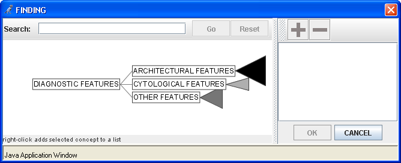
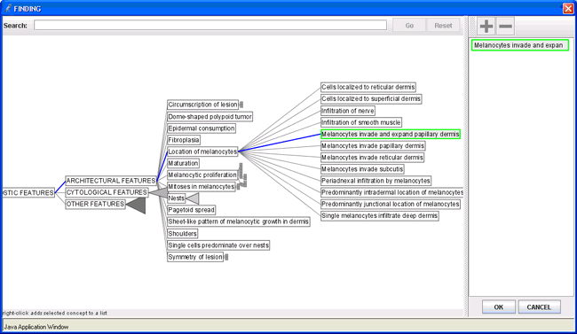
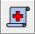

As you work with SimTutor, identifying findings and making hypotheses/diagnoses are accomplished through menu trees. The organization of these menu trees is described below as well as how to select and deselect items. Individual toolbar buttons are described in the next section.
Diagnostic criteria, such as fibroplasia, melanocytic proliferation or cytologic atypia are arranged into three main groups in a branching tree that can be expanded. It is important to note that prognostic criteria, such as margin status will be asked to be noted in the reporting section of the tutor.

Diagnostic criteria are initially divided into architectural, cytologic and other “branches.” Diseases are divided into benign and malignant branches initially. Melanocytic nevus is further divided into different maturation levels and the corresponding nevi types associated with that given maturation level. Malignant melanoma is further divided into degrees of invasion and the corresponding histological types associated with a given degree of invasion. Within each branch, items are listed alphabetically. A complete listing of diagnostic criteria and diseases appear in Appendix 1 and 2 of this manual.
There are two ways in which you can locate items in the menu trees: opening and closing the tree, or typing in a string to search for in the tree. To expand the tree, click a “branch” of the tree and that branch will open to display its contents. Branches that can expand are indicated by a triangle or rectangle on the right of the item. To open another branch, click on the expandable item.

Screenshot of Menu Tree for Findings with selection
Alternatively, you can have the program search the tree for a particular string of letters by typing the string and clicking “Go” or pressing the Enter key on your keyboard. The tree will highlight in orange any items containing that string. To go back to the original view of the tree, click the “Reset” button.
Note: you can zoom in and out of the menu tree by using the scroll wheel on your mouse when your mouse is over the tree.
Either:
Click on the item to highlight it and click to add the selection to the selection list
OR
Right click the item to select it.
Repeat step 1 to add additional items to the selection list as desired.
Click OK.
Even if the item appears to be highlighted from using the search tool, you still need to click the item to make sure it is selected.
To remove an item from the selection list:
Click on the item to highlight it. Make sure you are in the selection list in the right portion of the menu tree screen.
Click to remove the selection.
Click OK.
The first tab is used to examine the virtual slide and record a final diagnosis. You may also indicate relevant findings regarding diagnostic criteria. In monitoring your work, the tutor can provide feedback on diagnostic criteria you have identified and offer hints for identifying important diagnoses.
To indicate the presence of a finding:
Click the button.
Click the finding in the image to place an X at the location of the finding.
Select the appropriate finding from the menu tree that appears.
To describe findings:
Right click the text of the finding in Findings window.
Select “Describe Qualities” from the popup menu.
Select the appropriate description from the menu tree that appears.
If you misplace a finding X on the slide, you can move the X to a different area of the slide by holding down the mouse button and dragging the X to the correct location on the slide. When you mouse over a finding X, the name of the finding that X represents will appear on the screen.
For some cases, recognizing the absence of criterion is just as important in making the correct diagnosis as identifying criteria that are present.
To indicate that a finding is absent:
Click the button.
Select the appropriate absent finding from the menu tree that appears.
Absent findings that you have identified display with the word NO in front of them to distinguish them from present findings. Also, the menu tree for absent findings has a shaded background to distinguish it from the present findings menu.
As you are working through cases, it may be useful to you to generate a list of potential diagnoses that are relevant to the set of findings that you have identified thus far. In the tutor, these are called hypotheses.
To assert a hypothesis:
Click the button.
Select the appropriate hypothesis from the menu tree that appears.
When selecting hypotheses and diagnoses, the tutor automatically adds the maturation level for nevi (junctional, compound, or dermal) and the degree of invasion for melanomas (in-situ, in-situ and invasive, or invasive) to your list of items. If an item is selected that you do not want to add, deselect it by clicking on the item in the selection list and clicking the button.
In order to complete a case, you must record a final diagnosis.
To make a diagnosis:
Click the button.
Select your diagnosis / diagnoses.
You can also make a diagnosis by dragging any asserted hypothesis down into the diagnosis area.
Note: There are several cases within the tutor where the maturation level of a nevus (COMPOUND NEVUS) or degree of invasion of a melanoma (IN-SITU AND INVASIVE MELANOMA) is sufficient for the final diagnosis. Therefore, there will be cases where the nevus type or histological type will not be required for you to come to the correct final diagnosis.
The Glossary browser allows you to search for terms and obtain more information about them. It contains all findings, qualities of findings, diseases, and stains that are available in the tutor. To open the Glossary browser, click the button. The left-hand side of the glossary window displays the list of terms available, and the right-hand side will contain the glossary contents for whatever item is selected. When first opened, the glossary browser window will list all items in the glossary.
To search for a particular item, type the item in the “Search” field. The glossary list will contain any items related to the search term. For example, if you wanted to see a list of immunohistochemical stains the tutor recognizes, you can begin typing “immuno” in the search field and all of the stains will appear in the list. Click on an item in the list to view the glossary contents. All items contain a definition, and some findings will also include a picture. To view the whole picture, use the scrollbars if necessary. You can also see a larger view of the picture by double clicking on the picture. To close the larger image, click OK. Click OK to close the Glossary browser.
To see the patient history and gross description for the case you are viewing, click the  button. The case information will appear in a pop-up window. Click OK to close the pop-up window.
Once you are finished working through a case, you can click the button. The tutor will inform you that you are not done with a case if you have not reached the correct and/or complete diagnosis. The use of hints and mistake text to find a correct diagnosis is covered in the next section.
If you have reached the correct and complete diagnosis, the Type Report tab is activated. To move on to typing your report, click the Type Report tab.